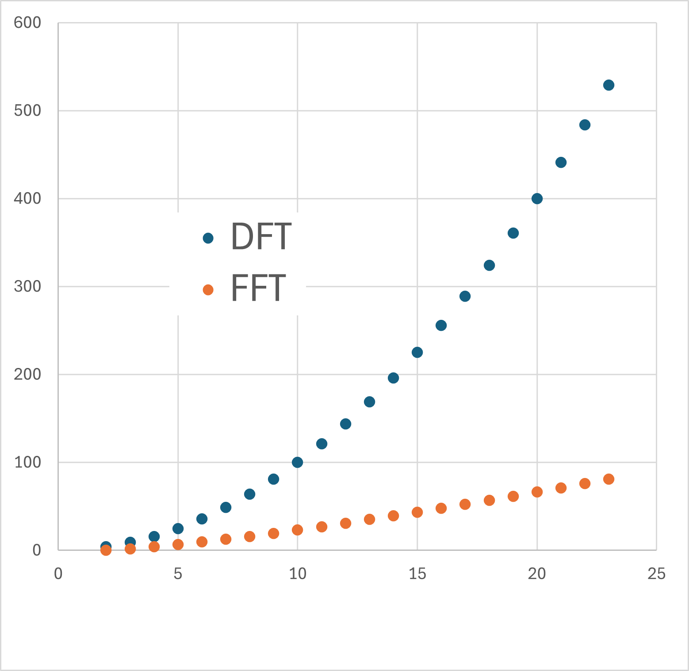

パワースペクトルの実際の作業内容-06
両対数プロットの問題点，解決策
両対数プロットをとったときの問題点を考えていきましょう．
逆ｆノイズ波形を例にとるとわかりやすいかもしれません．
1/ｆノイズ（ピンクノイズ）を生成するために，
サンプル（サンプル数） ：2048
ノイズ密度（これはよくわかりません．．．） ：0.1
指数（たぶん，f^(-n)のｎのこと） ： 1
dt（このアイコン内での設定ではないですが） ： 0.5 ms
で生成した波形に対して，
FFTサンプル数 ： 2048
でパワースペクトルを計算すると
と両対数プロットの場合では，
高周波に行くに従い，ノイズ（ノイズのノイズ）が大きくなる
高周波に行くに従い，dfが密になる
低周波領域では，dfが荒い
ことがわかります．これではなかなか近似がうまくいかなくなりそうですね．
低周波領域のポイントが少ない
高周波領域のポイントが多い
ので，近似をすると高周波領域に引っ張られちゃいます．
前々ページにあるように，
実際の波形の時間 (s) ： Stime
サンプル周波数 (1/s) ： Sfreq
サンプル時間分解能 (s) ： dt
実際の波形の数 ： n
とすると，
\(\Large \displaystyle S_{time} = n \times dt = \frac{n}{S_{freq}} \)
の関係になります．これにフーリエ変換すると，
フーリエ変換の横軸の最小単位 (Hz) ： df
フーリエ変換の横軸の数 ： fnumber
フーリエ変換の横軸のレンジ（最大値） ： frange
とすると，
\(\Large \displaystyle df = \frac{S_{freq}}{n} = \frac{1}{S_{time}}\)
\(\Large \displaystyle f_{number} = \frac{n}{2} \)
\(\Large \displaystyle f_{range} = \frac{S_{freq}}{2} \)
なので，
dt = 0.0005 ms (Sfreq = 2000 1/s)
n = 2048
Stime = 0.0005 ms×2048 = 約１S
とすると，
\(\Large \displaystyle df = \frac{2000}{2048} = 0.9766 Hz \)
と，
1～10 Hzの間に約10ポイント
しかポイントがないことがわかります．
逆に，
100～10000 Hzの間に約900ポイント
もポイントがあることがわかります．
対数で表示すると同じ幅なのに．．．
直感的にも，
もっと低周波にポイントを
高周波のポイントを少なくしてもいい
ことがわかります．
・低周波領域の周波数分解能を上げるにはどうしたらいい？
これは簡単，dfの計算式を見るように，
\(\Large \displaystyle df = \frac{S_{freq}}{n} = \color{red}{\frac{1}{S_{time}}}\)
とにかく計測時間を延ばすことに尽きます．
当然ながら，低周波とはゆっくりとした周期なので長時間データが取ることが必須となります．
ですので，蛍光色素の退色，たんぱくの変性などなかなか厳しいものがあります．
しかし，もし，長時間データを取得できたとしても，別の問題があります．
それは，計算時間の増大，です．
FFTの最初のFは，Fast，であるように，高速計算できるところに特徴があります．しかしそれは，あくまで一般的なフーリエ変換に比べて，です．
こちらのサイトにありますように，FFTの計算時間は，
\(\Large \displaystyle 計算時間 \propto N \ log_2 \left(\frac{N}{2} \right) \)
に比例することが知られています（ちゃんと計算したことはないですが）．
すると，たとえば（比例係数を無視して），
| n | nlog2(n/2) |
| 4 | 4 |
| 8 | 16 |
| 16 | 48 |
| 32 | 128 |
とｎが2倍になっても，2倍以上の計算時間となります．
グラフで表すと，

とDFTに比べるとFFTは圧倒的に計算時間を短縮できますが，いずれも下凸カーブなのでデータ数が多くなると計算時間がどんどん長くなります．
ですので，あまりデータ数が多いと莫大な計算時間がかかってしまいます．
しかし，dfの式をよく見ると，
\(\Large \displaystyle df = \color{red}{\frac{S_{freq}}{n}} = \frac{1}{S_{time}}\)
とあるように，サンプル周波数，Sfreq，を下げれば，同じｎであっても，Stime，を伸ばすことができます．
100ポイントであっても，1秒ごとなら100秒，0.1秒ごとなら10秒となるので．
しかし，やみくもにサンプル周波数を下げると，
\(\Large \displaystyle f_{range} = \frac{S_{freq}}{2} \)
今度は高周波領域の解析ができなくなってしまいます．
八方ふさがりですが，一ついい手があります．それは，
高時間分解能でデータを取得して，あとで間引けばいい
ということ．
1ms間隔でデータを取得して，その後データを間引けば(Decimate)，高周波領域も低周波領域も高い分解能で解析できます．
しかし．．．．そう簡単にはいかないのです．．．．その説明と対策は次ページに